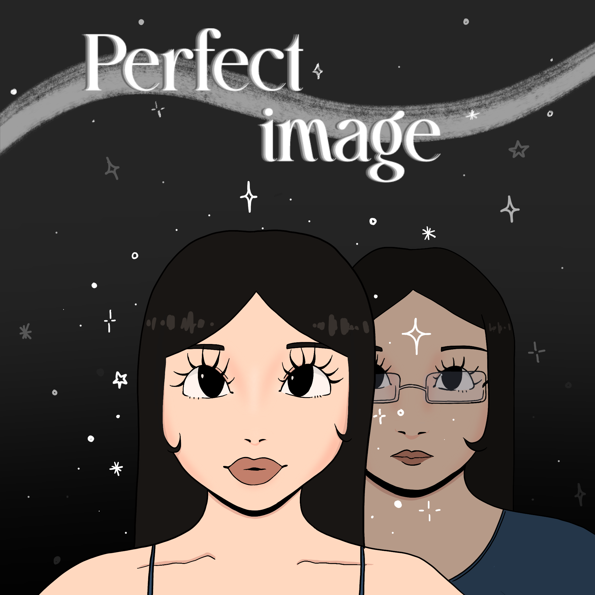

for my final project I made a choice game that explored body dysmorphia, and social pressure and beauty standards. In this game you are an average 19 year old girl. You want fit in to conventional beauty standards.You see posts of beautiful perfect women all the time and you wish to look just like them.Thanks to social media, you have easy access to a surgeon that will help you become the perfect girl you have always wanted to be.

click the image to play the game!